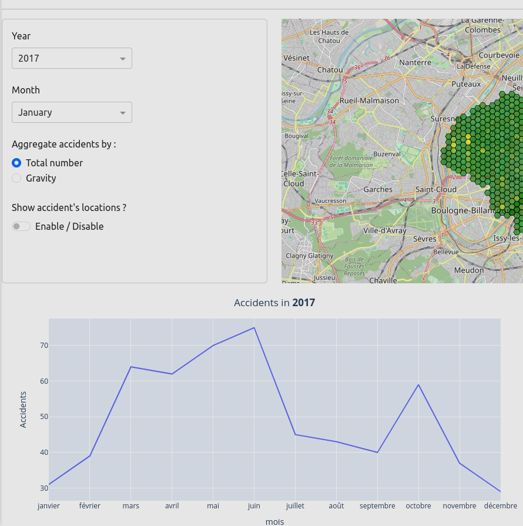

In this work, I developped a fully operational web dashboard application aiming to perform gender detection using webcams. In the backend, the application was
developped using Pytorch as a deep learning framework and FastAPI as API python framework. I used FaceApi.js to detect faces and fused that with a
frontend application using React.js
